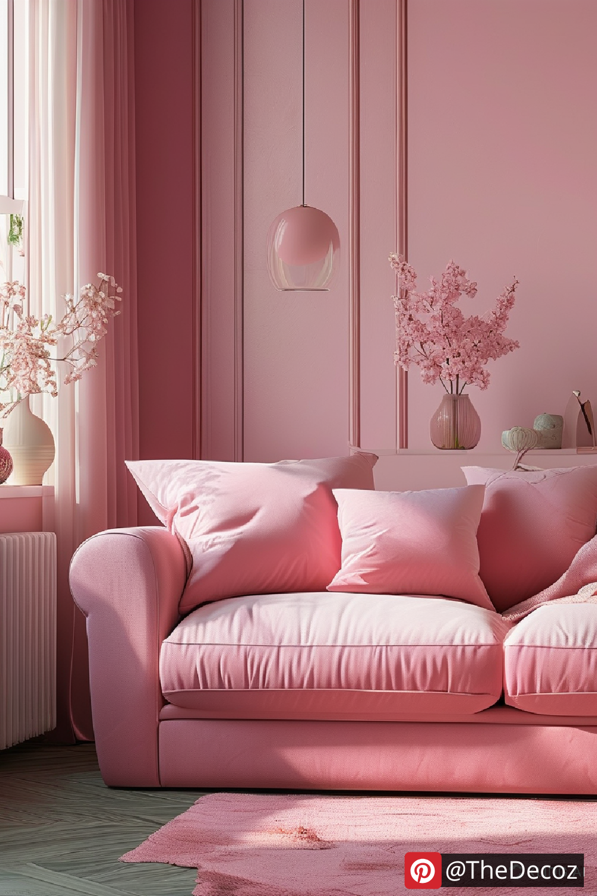

Pink Home Decor: Transform Your Space with Modern Elegance
When it comes to creating a stylish, inviting, and unique living space, Pink Home Decor is making a powerful comeback. No longer just associated with nurseries or overly feminine aesthetics, pink has evolved into a versatile and sophisticated color that suits a variety of interior design styles. From muted blush tones to bold fuchsia accents, incorporating pink into your home decor can create a fresh and modern atmosphere.
In this article, we’ll explore innovative ways to embrace Pink Home Decor, tips for balancing this color within your interiors, and the latest trends to elevate your space.
Why Pink Home Decor is Trending
Over the past few years, pink has shifted from a niche color choice to a mainstream design staple. The rise of minimalist and Scandinavian styles, along with trends like "millennial pink" and "rose quartz," has positioned pink as a go-to hue for those seeking a calming yet trendy environment.
Designers are now pairing pink with neutral palettes such as gray, beige, and white to create a soft, welcoming atmosphere. Additionally, pink adds warmth and a pop of personality to modern and contemporary interiors without overwhelming the space.
How to Integrate Pink Home Decor Into Your Space
1. Start with Subtle Accents
For those new to Pink Home Decor, consider starting small. Add pink throw pillows, vases, or artwork to your existing design scheme. These subtle additions can freshen up a room without requiring a major overhaul.
2. Statement Furniture Pieces
A pink velvet sofa or blush armchair can instantly become the focal point of a room. These statement pieces work especially well when contrasted with darker hues like navy blue or charcoal gray, creating a high-end, balanced look.
3. Pink Walls for a Bold Statement
For the adventurous decorator, pink walls can dramatically transform a space. Choose lighter shades like dusty rose for a serene bedroom or go bold with magenta in a creative home office or lounge area.
4. Mix Textures and Materials
Combining pink with natural textures such as rattan, wood, or linen adds depth and contrast. For example, a soft pink linen curtain paired with a rustic wooden table can create a cozy, inviting atmosphere.
5. Pair with Metallic Accents
Pink and metallics, particularly gold and brass, are a timeless combination. Whether through lighting fixtures, picture frames, or decorative trays, metallic accents enhance the elegance and charm of Pink Home Decor.
Trending Pink Home Decor Styles in 2025
Minimalist Blush Aesthetics: Soft pink paired with clean lines, white walls, and uncluttered spaces.
Maximalist Glam: Hot pinks and jewel tones combined with velvet, crystal chandeliers, and eclectic accessories.
Retro Revival: Dusty pinks with mid-century modern furniture and bold, geometric patterns.
Boho Chic: Muted pinks alongside earthy tones, macramé, and layered textiles.
Benefits of Pink in Interior Design
Beyond aesthetics, pink is known for its calming and nurturing psychological effects. Incorporating pink into your home can create a soothing ambiance, reduce stress, and even promote feelings of love and compassion. It’s a versatile color that works well in bedrooms, living rooms, dining areas, and even home offices.
Conclusion
Pink Home Decor is no longer confined to clichés — it’s a dynamic and versatile design choice that can infuse your space with personality, warmth, and contemporary flair. Whether you prefer a soft blush accent or a bold magenta statement, pink can seamlessly blend into a variety of interior styles.
Ready to elevate your space? Experiment with pink and watch your home transform into a stylish haven.
